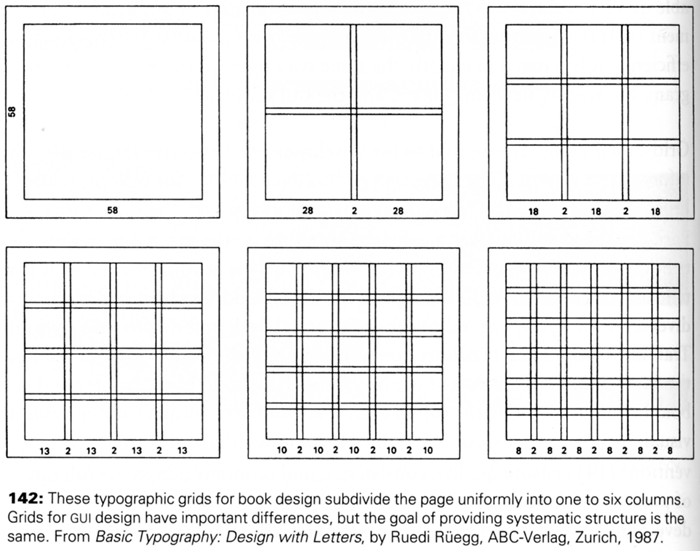
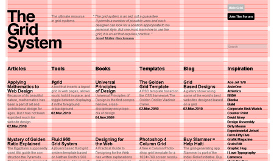
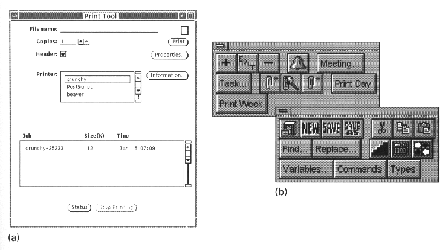
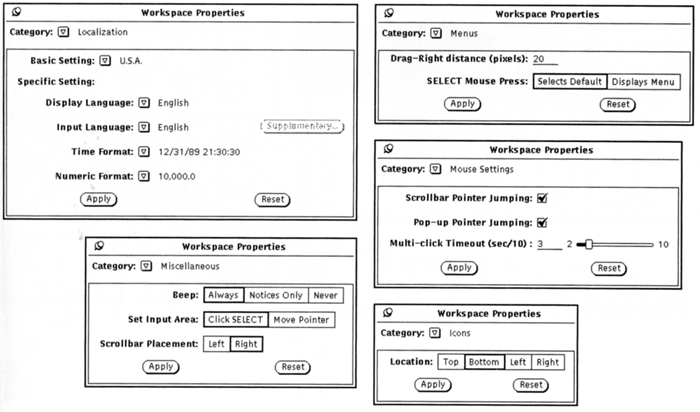
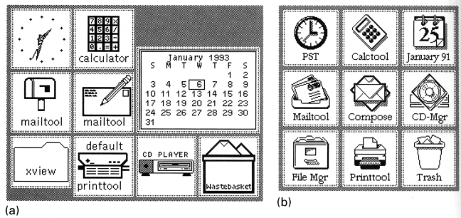
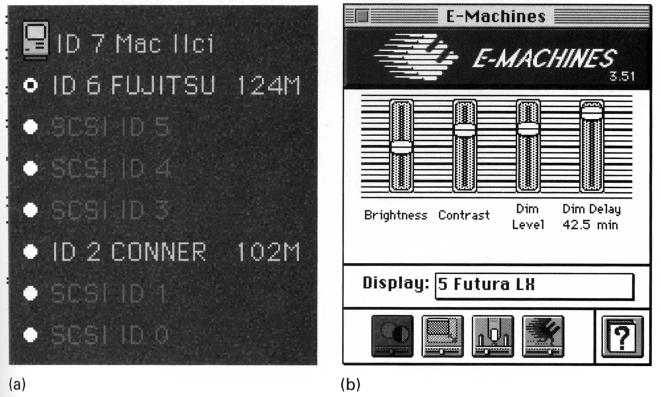
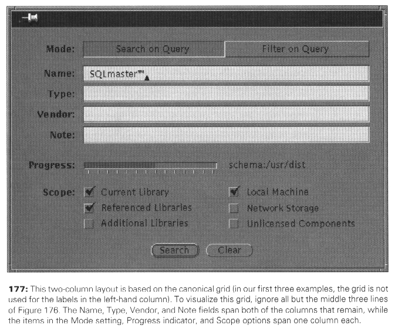
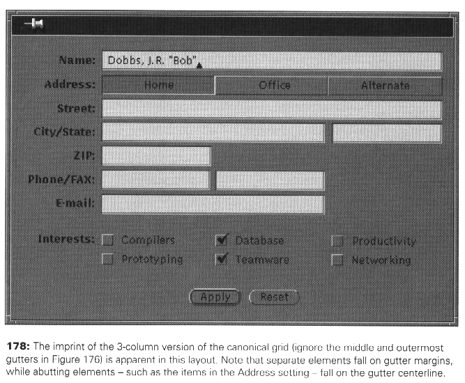
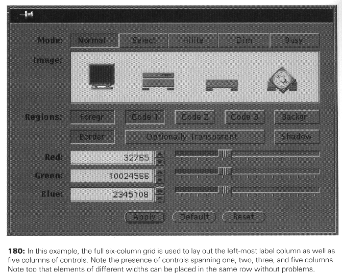

Module & Program
Grid Based Design

Here is a nice article:http://www.designer-daily.com/the-use-of-grids-in-website-design-6639

Examples of grids layouts: https://dribbble.com/
and https://treevis.net/ and https://textvis.lnu.se/
Grid layout: divide the screen into a small number of primitive units along each dimension and permits important structural elements to be placed consistently.
Possible exam question: What is the role of grid layout in UI design? What problems/errors that you can avoid by using grid layout for UI design?
Common Errors:
Arbitrary component dimensions

Random window sizes

Unrelated icon sizes and imagery

Inconsistent control presentations

Techniques:
Modular Units:
- Determine the vertical unit. In GUI design this means defining
the standard height and the spacing between
control.
- The vertical unit provide for proper spacing of
multi-line controls, multi-control groups, and separations
between groups.
- Determine the horizontal unit. The unit should be large enough
to accommodate most of the one-word labels in the design space
and should be at least three times as wide as the vertical unit.
- The horizontal unit should provide 3-7 divisions of
the typical display width and should be easy to factor evenly
into partial or multiple units.
--> Adopt these rules for your slide/poster designs
Grid-based Design:
- Determine any size restrictions on the area to be laid out
- Determine the basic vertical and horizontal modular unit.
The vertical unit is determined by the widget set, while the
horizontal unit is determined by the number of controls (and
sometimes by the lengths of their labels).
- Develop a rough layout sketch that approximates the sizes,
positions, and orientations of the relevant control elements
- Use the grid to adjust the sizes and positions of elements
across rows.
Short elements are extended to begin and end on
grid boundaries, while long elements are allowed to span
multiple grid units or are shortened to fit within the standard
unit.
The grid helps establish consistent alignment
relationships.



Sources:
Some images are retrieved from online resources. Other are from previous TTU HCI classes.
User Interface Design by Andrew Johnson
Designing Visual Interfaces by Mullet and Sano